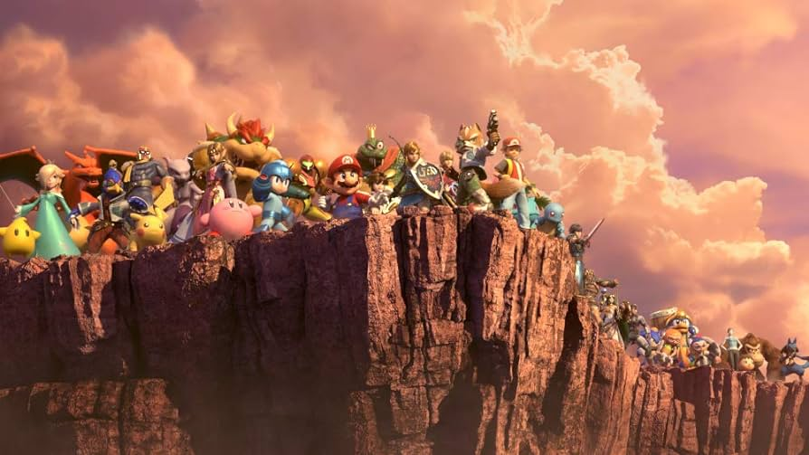
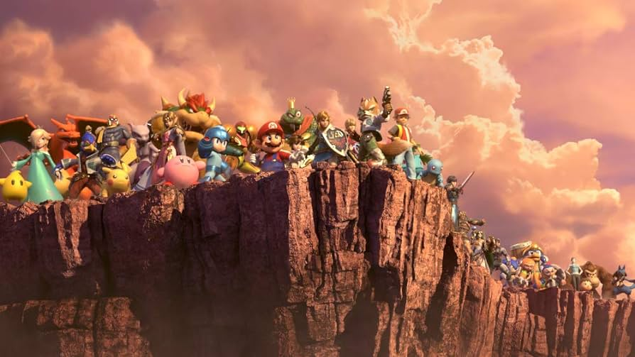
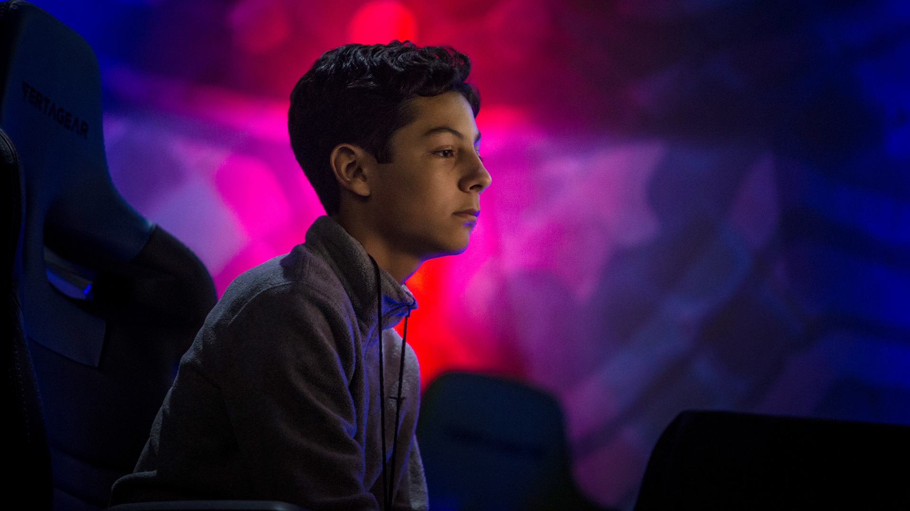
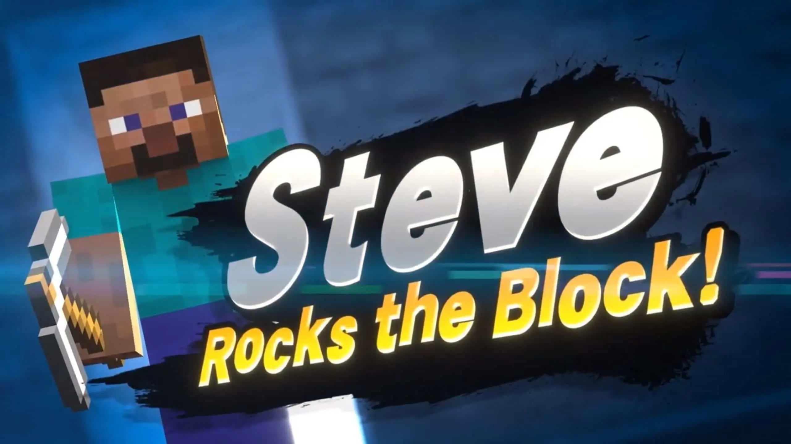

Smash Bros es muy popular entre los jóvenes, pero también tiene una gran escena competitiva (Aunque a Nintendo no le gusta). Aquí veremos cómo fue influenciado por MKLeo.
MKLeo llegó a ser considerado, por todos, como el mejor de Smash. A pesar de eso, ya había ganado torneos de anteriores Smash Bros. Durante 5 años dominó la escena competitiva con su Joker (Al principio con Ike, Lucina y Fox). En esos años, casi nadie, solo unos pocos pudieron, ganarle un solo set. Con su gran mentalidad mexicana y paciencia, ganaba a los tops con facilidad. Y aunque alguno tenga una ventaja (Como 2-0, una partida más y MKLeo perdía), remontaba increíblemente.
Llega la cuarentena, y la escena competitiva se esconde por años. Cuando termina, vuelve la escena competitiva y con ello cambios. Una joven promesa mexicana aparece, Spargo. Noviembre de 2021, Spargo gana dos sets consecutivos contra MKLeo viniendo de losers.
Además, llega Steve de minecraft como personaje, que destruye la escena competitiva con su juego mega pasivo. Esto provoca un baneo masivo en torneos. Pero antes de que pasase, se enfrentó MKLeo contra Onin en la Smash Con. Steve vs Byleth. Gana Onin, yl el torneo después. Tanto es el odio de Steve (y Kazuya) que cuando Onin perdió una partida en el torneo, todo el público aplaude más que ningún aplauso cuando ganaba Onin.
Aunque esto significase la caída de MKLeo, realmente no. Sigue jugando y sigue siendo considerado el mejor. Pero los torneos no son ganados completamente por MKLeo.
En este canal se habla bien de Smash: HachiSmash
"En caso de que haya algún dato falso o ves que falta más información, puedes enviar un email al siguiente correo: patitorbam@gmail.com"